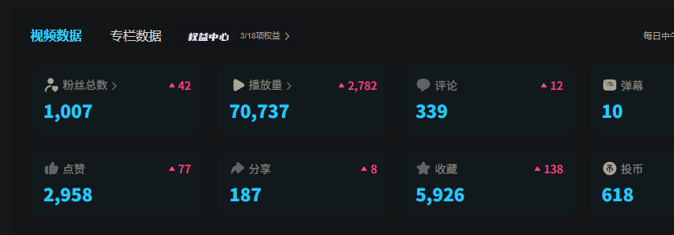

Warma广场
@Warma_Plaza
@Sacilave2 ❤ (ɔˆз(ˆ⌣ˆc)

Lave
@Sacilave2
鼠鼠耗时 66 天，b站从起号到达成千粉成就
高视频质感和保持周内4-5次更新是关键
这个频道我基本实现了自动化，并没有花太多的精力所以成果对我来说还算不错啦，休学期间打算试着认真做个新频道，打算先试着能不能把cos玩明白，玩得明白就露脸，玩不明白就从其他方向打造人设😉
刚好的66天，望表顺利 https://t.co/QeL9WSJJTJ